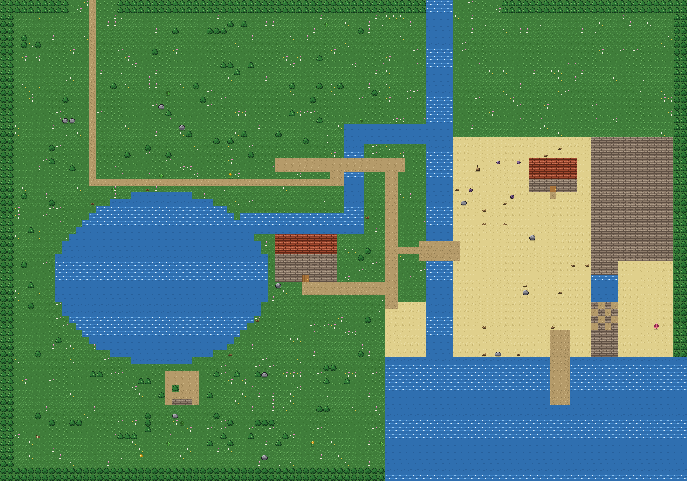
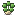
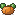
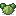
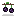
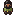
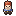

Elderglen wiki
What is in the game, and where to find it. Start with a category or use the search box.

Fish52 fish, by water, season and time
Bundles30 hall bundles in 6 rooms
 PeopleThe 30 named people, their days and gifts
ItemsGoods the hall and the ponds ask for
PeopleThe 30 named people, their days and gifts
ItemsGoods the hall and the ponds ask for



Crops27 crops, by season and growing time
Forage39 things to gather Recipes54 dishes and craftable things PlacesThe areas of the home valley
